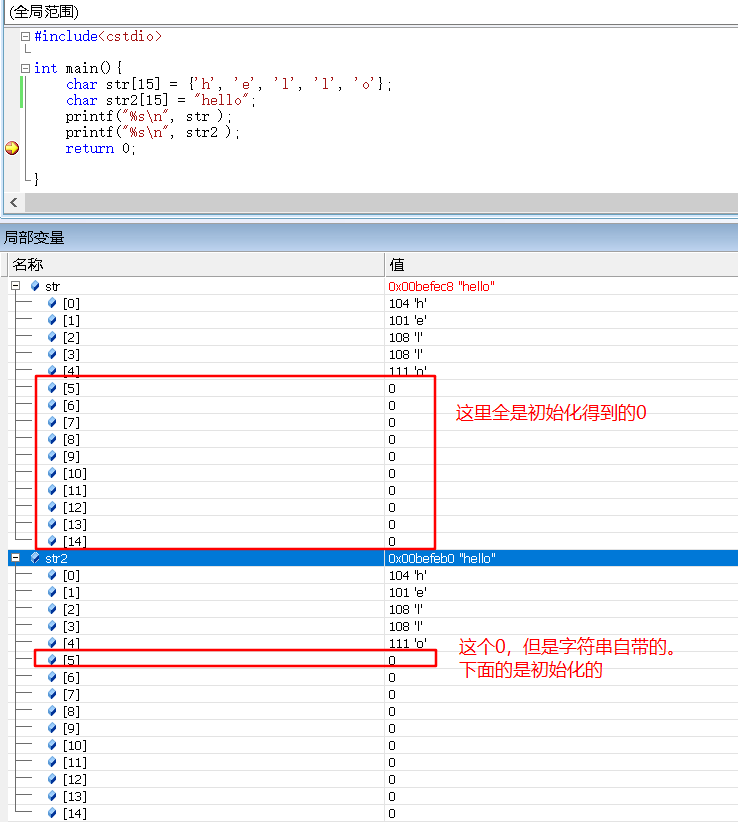
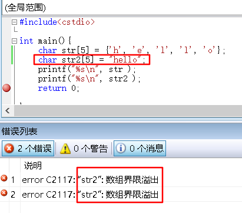
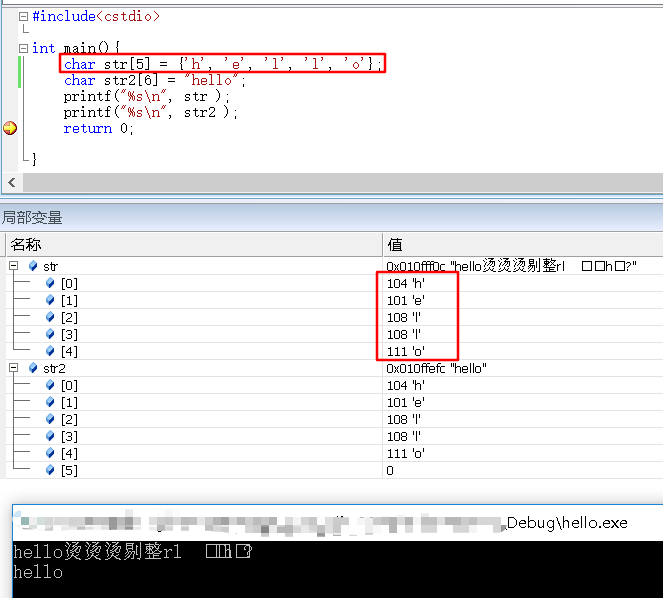

C/C++快速入门
1 |
|
一个基本的C++程序模板，当然主要是注意头文件，和c语言的<stdio.h>不一样的,这里是<cstdio>
常用的头文件还有1
2
3
4
using namespace std;
基本数据类型 不用markdown，用html，但br换行
| 类型 | 大致范围 | 输入 | 输出 | |
|---|---|---|---|---|
| 整型 | int | 正负2*10^9用 | %d | %d |
| long long | 9*10^18 超过了用这个 LL | %lld | ||
| 浮点型 | float | 精度6-7位 | %f | %f |
| double | 精度15-16位 | %lf | ||
| 字符型 | char | -128~127 用0~127 ‘’ | %c | %c |
| 字符串 | 就是字符数组 “” | %s | ||
| 布尔型 | bool | 正负整数为true，0为false，存储按1和0 |
1 | %m.nf |
1 | scanf printf getchar putchar gets puts sscanf sprintf 4对 |
1 | 从scanf和printf到sscanf和sprintf |
1 | 强制转换(新类型名)变量名 |
符号常量和const常量
1 | #define const 推荐用const |
注释
1 | // /**/ |
运算符
1 | 1.算数 |
顺序结构
常用数学函数 (加math.h)
- fabs(double x)
- floor(double x) ceil(double x)
- round(double x)和java不一样
- pow(double r, double p)
- sqrt(double x)
- log(double x)
- sin(double x) cos(double x) tan(double x)
- asin(double x) acos(double x) atan(double x)
选择
1 | if else |
循环
1 | while do-while |
数组
一维数组 大小固定 const N
下标0~n-1
初始化的问题
1 | int a[10] = {}; |
二维数组
int a[5][6] = { {}, {}, {} }；
若定义的数组大于10^6，则放在main函数外，不然栈中放不下，静态存储区可以放得下。
字符数组 char
1 | char str[15] = {'A', 'B' }; |
//例子
1 |
|

1 | char str[5] = {'h', 'e', 'l', 'l', 'o'}; //这个字符数组是不会自动加\0，这个没有溢出 |


string.h头文件
4个常用的
- strlen(str)
可以得到字符数组中第一个\0前的字符个数 - strcmp(str1, str2)
按ASCII大小比较，按编辑器不同，返回正数，0，负数。 - strcpy(str1, str2)
str2复制给str1，包括str2的\0，不然怎么结束 - kstrcat(str1, str2)
str1接上str2
sscanf和spritf
函数
指针
一个地址表示存有1个字节，通过数据类型知道要读多少个字节。
&取地址 是个unsigned整型。
定义1
2int *p1, p2; //一个是指针，一个是整型
int *p1, *p2; //两个指针
指针加减法
加法表示跳过n个此种类型的距离。
减法表示以此种类型为基准，相差n个距离。
指针和数组
数组名就是个指针，当数组首地址使用，表示整个数组。
指针与函数
引用
对引用变量的操作就是对原变量的操作。
当你不想通过传地址，可以通过引用来实现交换数据。
1 |
|
就是在函数的参数中，&。
注意参数变量得是变量，不能是const常量
结构体
1 | struct studentInfo { |
上面的定义中，studentInfo是结构体名字，Alice Bob是结构体变量，stu[1000]是数组。
上面studentInfo中不能出现studentInfo类型的，但可以出现定义自身类型的指针变量。
1 | struct node { |
访问结构体内元素
要么用. 要么->
1 | struct studentInfo { |
可以1
2
3stu.id stu.name stu.next
(*p).id (*p).name (*p).next
p->id p->name p->next
结构体初始化(利用构造函数)
同java 没有返回类型，名字同结构体名1
2
3
4
5
6
7
8
9
10
11
12
13struct studentInfo {
int id;
char gender;
studentInfo(){};
studentInfo(char x){
gender = x;
};
studentInfo(int x, char y){
id = x;
gender = y;
};
}
补充
cin和cout
加头文件1
2
using namespace std;
不需要指定格式
1 | cin >> n >>db >> c >> str; |
浮点数比较大小
利用一个eps 10^-8
大于，小于 大于等于， 小于等于
这些都画个图就知道了
(b-eps,b+eps) a
a > b+eps
即a-b > eps
同理
cos(π) = -1 所以 π = acos(-1.0)
复杂度
时间复杂度一般为10^7~10^8次,所以O(n^2) n=1000可以接受
空间复杂度也不要超过10^7 A[10000][10000]的就不要
黑盒测试
单点测试 PAT
多点测试
3种
- while……EOF 题目没有说明有多少数据需要输入时
1 | while(scanf("%d", &n) != EOF) { |
- while……break 题目要求输入的数据满足某个条件时停止输入
1 | while(scanf("%d%d", &a, &b) != EOF) { |
- while(T—) 题目给出测试数据的组数
1 | 1. 正常输出 |